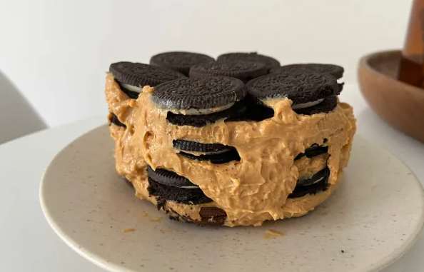

ChocOreo

La choco Oreo es una torta que alterna capas de galletitas Oreo con un relleno de queso crema mezclado con dulce de leche.
Ingredientes
- 2 paquetes de oreo
- 1 pote de dulce de leche
- 2 potes de queso crema
Pasos
- Mezcla el dulce de leche con el queso crema. Durante la introducción de esta receta mencionábamos la posibilidad de modificar los porcentajes de estos ingredientes para obtener un resultado más o menos dulce. En este caso, estamos usando 50-50, pero si prefieres un sabor aún más dulce, puedes agregar más dulce de leche. De ser así, puedes usar dulce de leche repostero, que tiene mayor consistencia
- Cubre el molde donde deseas armar tu choco Oreo con film y comienza a alternar capas de galletitas con capas de relleno hasta utilizarlo todo. Por supuesto que la torta adoptará la forma del molde donde la realices y será más sencillo usar moldes cuadrados con bordes redondeados o bien redondos, como en este caso.
- Reserva tu choco Oreo por mínimo 40 minutos en heladera o 20 en freezer antes de desmoldarla. ¡A comer! Cuéntanos si te ha gustado este postre con Oreo y comparte la fotografía del resultado final.
Valor nutricional
- Calorías: 655 kcal
- Proteínas: 6,5 g
- Grasas: 38,5 g
- Carbohidratos: 72 g
Otras recetas